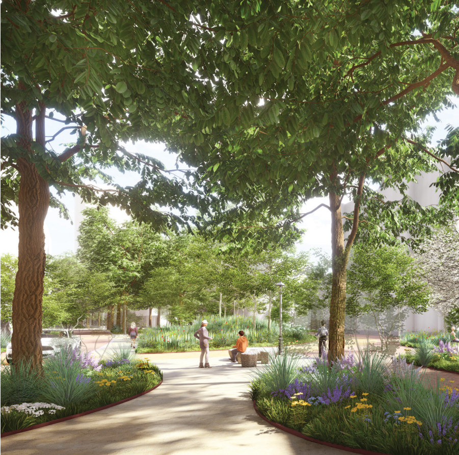
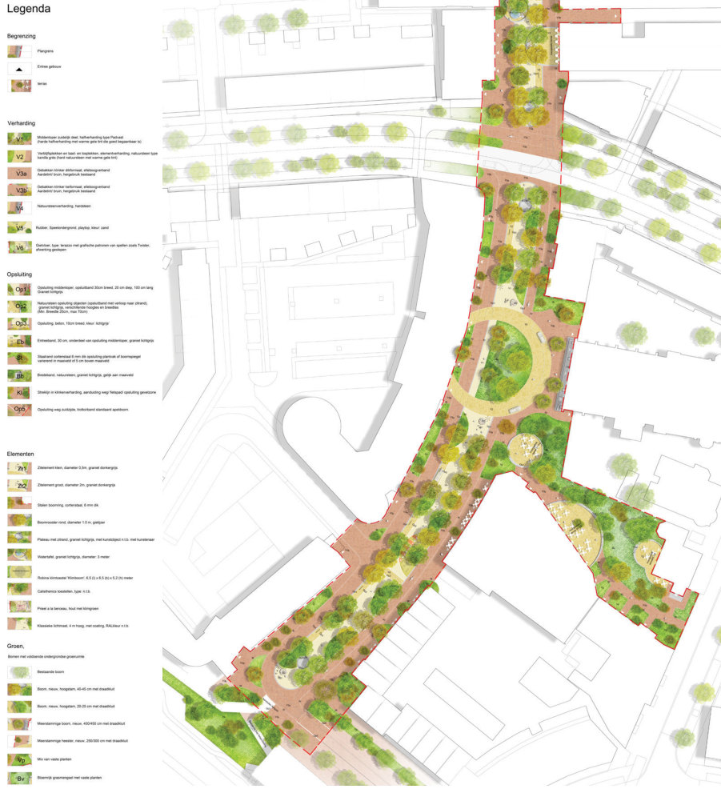
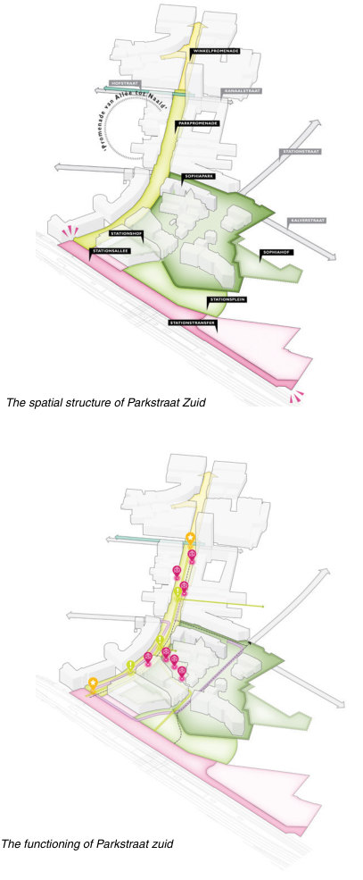
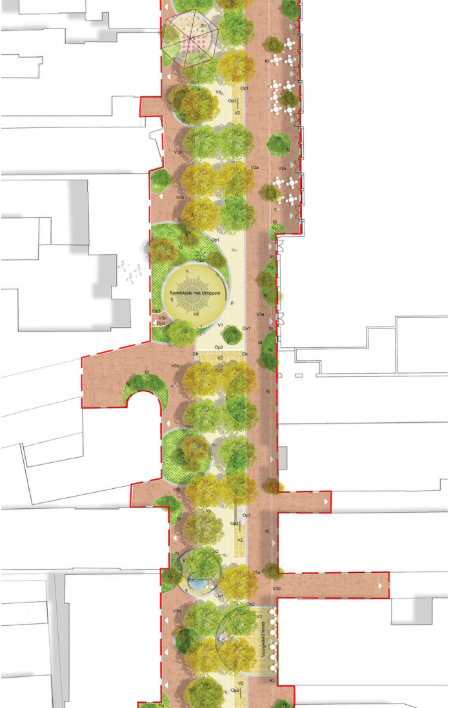
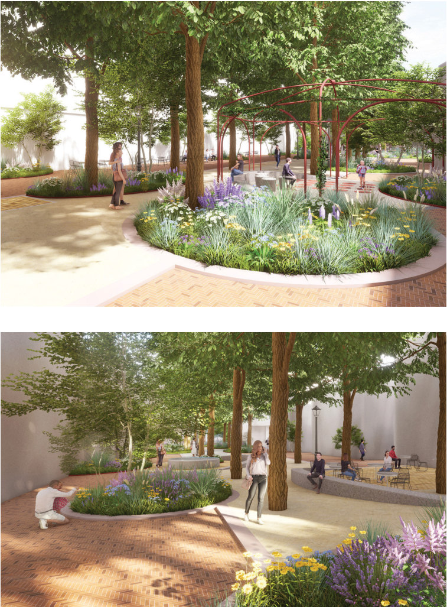
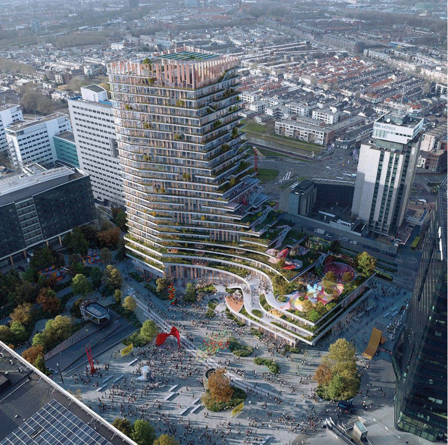

Parkstraat
- Place
- Apeldoorn
- Year
- 2022
- Assignment
- Public space
- Firm
- Buro Sant en Co
- Design
- 2022
- Status
- Tender / VO
- Collaborations
- Gemeente Apeldoorn
- Team
- Paul Plambeck, Merel Cozlijsen

The southern half of Parkstraat, redesigned as the green connection between Apeldoorn's station and Paleis Het Loo. It became a full urban street in the south and a quieter, more liveable one in the north, worked out with residents and stakeholders through an intensive co-creation process.
The Municipality of Apeldoorn asked us for a preliminary design for the southern part of Parkstraat, as part of the transformation from Hoofdstraat to Parkstraat, building on the vision and model study we developed in 2021. The design was crafted through an intensive co-creation process with stakeholders.

The aim is a strong, recognisable connection between the station area and Griftpark — a vital link from the station to Paleis Het Loo. Parkstraat Zuid becomes a full urban street in the south and a liveable street in the north, without losing its role in the city centre.


Emphasis is on greening and distinctiveness, to avoid uniformity with other cities: a sense of place that reflects Apeldoorn's own landscape and royal history. Because its functions keep changing, the street needs a flexible design — a robust structure with a prominent promenade that can be adjusted over time.


Next projectJaarbeurspleinUtrecht, 2023